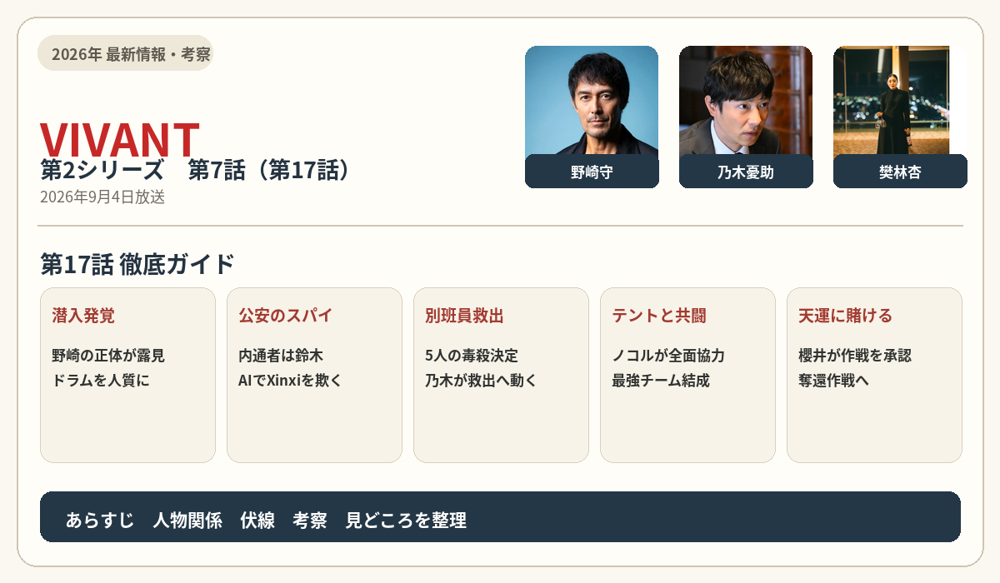
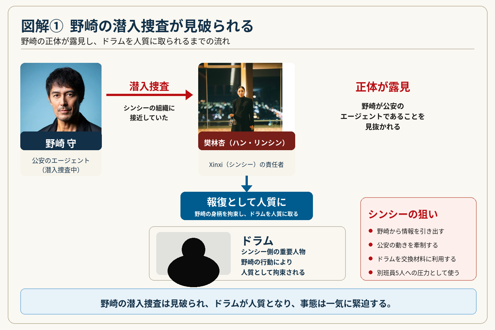
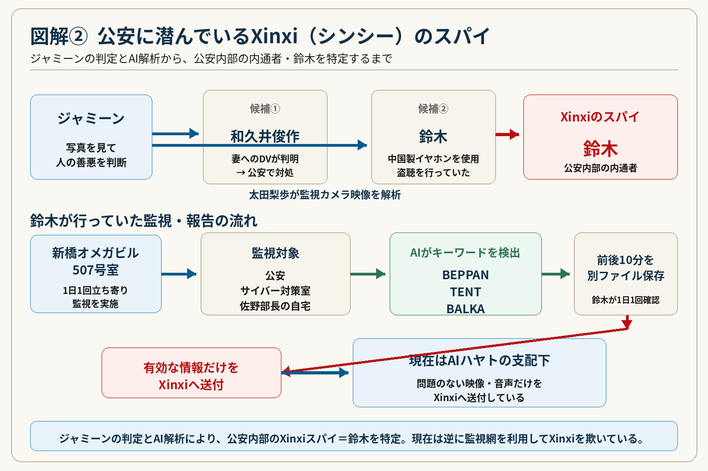
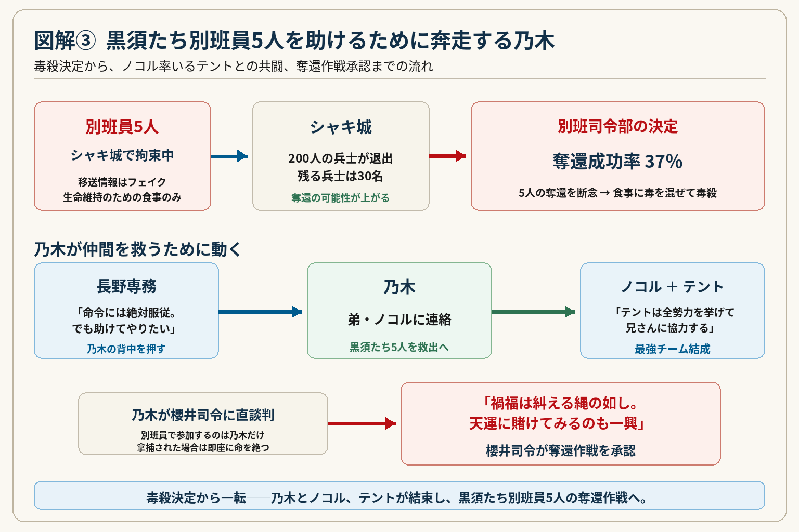

野崎の潜入発覚――
公安のスパイ、そして別班員5人奪還へ
第17話では、野崎の潜入捜査がXinxi（シンシー）に見破られ、公安内部に潜んでいたスパイの正体も判明。一方、黒須たち別班員5人を救うため、乃木はノコル率いるテントと手を組み、奪還作戦へ動き始めます。

1）野崎の潜入捜査が見破られる
現れたのは、死んだはずの野崎の部下・乃木と瓜二つの男、劉銘軒（リュウ・ミンシュエン）だった。
さらに、野崎が東条に暗号化して日本の乃木に送っていたメッセージも解読され、絶体絶命の状況に陥ってしまう。
乃木のことを、「中身はお前とは全く違う。奴は超一流。お前のような二流とは格が違う」と蔑む。
そんな野崎の前に連れてこられたのは、傷だらけのエージェント・ドラム（富栄ドラム）だった。
劉銘軒（リュウ・ミンシュエン）はドラムに銃を突きつけ、野崎から真実を聞き出そうとする。
野崎は、テントの情報を知りたがっているシンシーは自分やドラムを殺さないと踏み、「潜入捜査」であることを認めた。
野崎に電光掲示板でシャキ城の情報を教えていたのは、「毛じいさん」という北京時代からの協力者であることが分かった。
劉銘軒（リュウ・ミンシュエン）は10日間長秋に向かった。

2）公安に潜んでいるシンシーのスパイ
乃木（堺雅人）は、奇跡の少女・ジャミーンの力を借りて、公安に潜んでいるXinxi（シンシー）のスパイをあぶり出そうとする。
ジャミーンはサヴァン症候群の類型である可能性があり、写真を見ただけで人の善悪を判断することができる能力を持っている。
櫻井司令から、佐野部長は拘束されて尋問を受けたとき、善人だと言われていた。
ジャミーンがあぶり出したスパイは、和久井俊作（田中俊介）と鈴木（内野謙太）。
佐野部長は乃木に「殺すなよ」と告げた。
ブルーウォーカー・太田梨歩が2人を監視カメラで解析した結果、怪しかった和久井（田中俊介）は、妻にDVを行っていることが分かり、公安で対処することになった。
Xinxi（シンシー）のスパイは、鈴木（内野謙太）だった。
中国製のイヤホンを使い、盗聴を行っていた。
乃木（堺雅人）は、鈴木がXinxi（シンシー）に行っている報告をAIにやらせ、公安内部の内通者＝鈴木を確保し、陸自の特別収容施設に収容した。
鈴木を尾行したことで、警視庁ビル近くの新橋オメガビル507号室に1日1回立ち寄っていたことが分かった。
そこで鈴木は監視を行っていた。
現在の公安、サイバー対策室、佐野さんの自宅を監視していた。
AIが「BEPPAN」「TENT」「BALKA」のキーワードの音声を拾うと、その会話の前後10分を別ファイルに保存。その音声を鈴木が1日1回チェックして、有効なものだけをXinxi（シンシー）に送付していた。
現在はAIハヤトの支配下に置かれ、問題のない映像、音声だけをXinxi（シンシー）に送付している。

3）黒須たち別班員を助けるために奔走する乃木
また、黒須（松坂桃李）たち別班員5人のガリル村・ジャマル収容所への移送は偽装フェイクで、今もシャキ城で拘束されていることを確信した乃木。
5人は家畜にやるようなトウモロコシと大麦のおかゆだけを、生命維持のために与えられていた。
フェイクにより200人の兵士がシャキ城から退出し、6％だった成功率から、成功率は上がった。
30名の兵士なら、シャキ城への奪還作戦の可能性は上がったと、乃木は櫻井（キムラ緑子）に訴える。
しかし別班司令部で、櫻井は奪還成功率37％を理由に、5名の奪還断念と毒殺を決定する。
奪還を断念し、非情な通告が行われる。現地別班員が食事に毒を混ぜて、5人を毒殺すると決定する。
「伝達は以上」と告げられた。
長野専務は、「命令には絶対服従だ。それが義務。でも助けてやりたい」と乃木の背中を押し、「君には仲間・最強部隊がいるだろう」と話す。
長野専務の叱咤により前を向く乃木は、弟・ノコルに連絡をする。
ノコルは、「なんで単刀直入に言わない。黒須を助けに行く、手伝えと。テントは全勢力を挙げて、兄さんに協力する」
血のつながり以上の愛を持って結束する二人。ここに、乃木とノコル率いるテントの最強チームが完成する。
乃木は櫻井に脱監作戦を直談判。
「別班員で参加するのは私だけ。拿捕された場合、即座に命を絶ちます。あとは私の仲間です」
と、了解を取り付ける。

4）禍福は糾える縄の如し。天運に賭けてみるのも一興
「禍福は糾える縄の如し。天運に賭けてみるのも一興」は、簡単に言うと、
「悪いことと良いことは、縄のように交互に巡ってくるものだ。どうなるか分からないが、運命に賭けてみるのも一つの道だ」
という意味です。
「禍福は糾える縄の如し」
禍（か）＝災い、不幸
福（ふく）＝幸運、幸福
糾える（あざなえる）＝縄をより合わせる
縄の如し＝縄のようなもの
縄が複数の紐をより合わせてできているように、人生では不幸と幸福が絡み合い、交互にやってくるという意味です。
「天運に賭けてみるのも一興」
天運＝人間の力ではどうにもできない運・巡り合わせ。
一興（いっきょう）＝それも一つの面白いこと、一つの選択肢。
今回の櫻井司令の言葉として考えると、
「成功率は低い。しかし、今は絶望的に見えても、それが幸運に転じることもある。最後は運に賭けて、乃木たちにやらせてみよう」
というニュアンスです。
つまり、乃木の仲間を救いたいという思いと作戦を、櫻井が最終的に認める場面に合った言葉です。
5）第17話を見終わっての私の考察
今回、一番印象に残ったのは、乃木が別班の命令よりも、仲間を救う道を選んだことです。
別班司令部が出した結論は、黒須たち5人の奪還を断念し、現地の別班員によって毒殺するという非常に厳しいものでした。
成功率37％。
組織として考えれば、奪還作戦によってさらに犠牲者を増やす危険を避けるという判断なのだと思います。
しかし乃木は、それを受け入れなかった。
ここで乃木の背中を押したのが長野専務でした。
「命令には絶対服従だ。それが義務。でも助けてやりたい」
そして、「君には仲間・最強部隊がいるだろう」という言葉によって、乃木はノコルに連絡します。
ここからの展開は、今回かなり好きなところです。
第1シリーズでは敵対する立場でもあった乃木とノコルが、今度は黒須たち別班員5人を救うために手を組む。
しかもノコルは、
「テントは全勢力を挙げて、兄さんに協力する」
とまで言った。
乃木にとってテントは、もう単なるかつての敵ではない。
父・ベキが残したものを受け継ぐノコルと、乃木を中心に、別班とテントという本来なら交わるはずのない二つの存在がつながったように感じました。
そして櫻井司令の、
「禍福は糾える縄の如し。天運に賭けてみるのも一興」
という言葉。
成功する保証はない。それでも乃木たちに賭ける。
これは単に奪還作戦を許可したというだけではなく、櫻井が乃木自身を信じた言葉だったように思います。
一方で気になるのは野崎です。
潜入捜査であることは完全に見破られましたが、シンシーがテントの情報を必要としている以上、野崎とドラムを簡単には殺せない。
そして公安内部のスパイだった鈴木も確保され、逆にAIハヤトによってシンシーへ偽の情報を送り続ける状態になりました。
つまり今回、シンシーが一方的に日本側を監視していた関係が、少しずつ逆転し始めたようにも見えます。
第17話で、野崎側、公安側、そして乃木・ノコル側がそれぞれ反撃の準備を整えた。
次はいよいよ、黒須たち5人の奪還作戦と、シンシーとの本格的な戦いが一つにつながっていくのではないか。
そんな次回への期待を強く残した第17話でした。